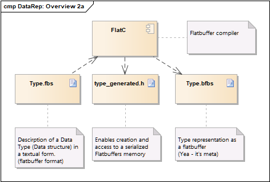

Documentation¶
- naming conventions
- provider
- Routing of requests
- Provider Interface functions
- Usage of Variant
- Usage of flatbuffers
- Metadata
- Typetree
- Usage of client
Node names¶
Each value is addressed by a path. A path creates of a set of nodes. When nodes are named, an API is intuitive and easy to use. If done poorly, that same API can feel difficult to use and to understand.
A node can be a singleton or a collection. For Example customers is a
collection node and customer is a singleton resource (in a banking
domain). We can identify customers collection resource using the path
/customers. We can identify a single customer resource using
the path /customers/{customerID}.
A node may contain sub-collection resources also. For example, sub-collection
resource accounts of a particular customer can be identified
using the path /customers/{customerId}/accounts (in a banking domain).
Similarly, a singleton resource account inside the sub-collection
resource accounts can be identified as
follows: /customers/{customerId}/accounts/{accountId}.
Node naming conventions ¶
Use small capital node names¶
Always use small capital node names!
Hierarchical relationships¶
Use subnodes to indicate hierarchical relationship between resources
device-management
device-management/managed-devices
device-management/managed-devices/{id}
device-management/managed-devices/{id}/scripts
device-management/managed-devices/{id}/scripts/{id}
Use nouns to represent resources¶
Nodes should refer to a resource that is a thing (noun) instead of referring to an action (verb) because nouns have properties which verbs do not have - similar to resources have attributes. Some examples of a resource are:
- Users of the system
- User Accounts
- Network Devices etc.
and their resource URIs can be designed as below:
device-management/managed-devices
device-management/managed-devices/{device-id}
user-management/users/
user-management/users/{id}
Use verbs to represent actions¶
Has to return method in metadata.
Use hyphens (-) to improve the readability of nodes¶
To make your nodes easy for people to interpret, use the hyphen (-) character to improve the readability of names in long path segments.
inventory-management/managed-entities/{id}/install-script-location //More readable
inventory-management/managedEntities/{id}/installScriptLocation //Less readable
Do not use underscores ( _ ) It's possible to use an underscore in place of a hyphen to be used as separator. But depending on the applications font, it's possible that the underscore (_) character can either get partially obscured or completely hidden in some browsers or screens.
To avoid this confusion, use hyphens (-) instead of underscores ( _ ).
inventory-management/managed-entities/{id}/install-script-location //More readable
inventory_management/managed_entities/{id}/install_script_location //More error prone
Do not use file extensions¶
File extensions look bad and do not add any advantage. Removing them decreases the length of URIs as well. No reason to keep them.
Apart from above reason, if you want to highlight the media type of API using file extension then you should use metadata type.
device-management/managed-devices.xml /*Do not use it*/
device-management/managed-devices /*This is correct path*/
Never use CRUD function names in path¶
Paths should not be used to indicate that a CRUD (Create/Read/Update/Delete) function is performed. Paths should be used to uniquely identify resources and not any action upon them. Request methods should be used to indicate which CRUD function is performed.
browse device-management/managed-devices //Get all devices
create device-management/managed-devices //Create new Device
read device-management/managed-devices/{id} //Get device for given Id
write device-management/managed-devices/{id} //Update device for given Id
delete device-management/managed-devices/{id} //Delete device for given Id
Provider ¶
A provider is responsible for nodes. One provider can handle an unlimited amount of nodes. All requests to one provider are serialized: It's guarantied that if you are in one of the interface functions of a node (onRead, onWrite, ...) no other interface function of a node handled by the same provider is called. So you don't have to handle mutual exclusion to data handled by one provider.
Register of nodes¶
To register a path you have to specify which ProviderNode is responsible for this node.
Example: Registration for ethercat/version: whenever a request for "ethercat/version" is send, this request will be routed to this particular node.
If a provider is responsible for multiple nodes or the subnodes are unknown at the moment of registration, its possible to register with wildcards.
Single wildcard "*"¶
A single wildcard is the sign "*". "*" stands for a any string on a hierarchy level. You can use multiple wildcards at different levels.
Examples:
- provider1: test/*
- provider2: test/foo/*/bar
- provider3: test/*/foo
- provider4: test/*/*
- provider5: test/bar/bar
Double wildcard "**"¶
A double wildcard is the string "**". "**" stands for any string on any hierarchy level. Such a wildcard is only allowed as last characters at your registration string.
Example:
- provider6: test/**
- provider7: test/bar/**
Routing of requests ¶
All requests except browse requests are routed to the provider the address matches best to the registered path. So on each level a registration with a specific path matches before a registration with a wildcard. A single wildcard matches before a double wildcard. An address matches always the best registered provider (see example). Only provider with a wildcard at end of it's registered address will get browse requests.
Behavior of '/'¶
Any '/' at begin or end at the request address will be removed. A provider will never get an address with a leading or tailing '/'. Routing of addresses will be done without a leading or tailing '/'.
Example for routing of requests:¶
| address | destination for browse | destination for read |
|---|---|---|
| "" | nobody | nobody |
| "test" | provider1 | nobody |
| "test/1" | provider4 | provider1 |
| "test/1/foo" | provider6 | provider3 |
| "test/1/bar" | provider6 | provider4 |
| "test/foo" | provider4 | provider1 |
| "test/bar" | provider7 | provider1 |
| "test/bar/bar" | provider7 | provider5 |
| "test/bar/foo" | provider7 | provider7 |
| "test/bar/bar/foo" | provider7 | provider7 |
| "test/bar/foo/foo" | provider7 | provider7 |
| "test/foo/foo" | provider6 | provider3 |
| "test/foo/foo/bar" | provider6 | provider2 |
| "test/foo/foo/foo" | provider6 | provider6 |
| "test/1/bar" | provider6 | provider4 |
| "test/1/bar/1" | provider6 | provider6 |
Browse¶
Whenever a node is browsed, the result is a list of strings with contains the names of the subnodes of this nodes. In general datalayer wants to answer this kind of requests at its own. Only if someone has registered with a wildcard ("*") for this particular node this provider will be asked to give for subnodes. The result of this request will be merged with the nodes datalayer knows for its own. So a provider does not need to return values on a browse request it has already registered with a more specific path.
| address | result of browse |
|---|---|
| "" | "test" |
| "test" | "foo", "bar" + return from provider1 |
| "test/1" | "foo" + return from provider4 |
| "test/1/foo" | return from provider6 |
| "test/1/bar" | return from provider6 |
| "test/foo" | "foo" + return from provider4 |
| "test/bar" | "foo" + "bar"+ return from provider7 |
| "test/bar/bar" | return from provider7 |
| "test/bar/foo" | return from provider7 |
| "test/bar/bar/foo" | return from provider7 |
| "test/bar/foo/foo" | return from provider7 |
| "test/foo/foo" | "bar" + return from provider6 |
| "test/foo/foo/bar" | return from provider6 |
| "test/foo/foo/foo" | return from provider6 |
| "test/1/bar" | return from provider6 |
| "test/1/bar/1" | return from provider6 |
Provider Interface functions ¶
Properties:
- idempotent, i.e. operation will have the same effect on the servers state if executed once or multiple times (note: this does not necessarily mean returning the same response or status code)
- safe, i.e. must not have side effects such as state changes
- Input data
- Output data
| function | description | safe | idempotent | Input | Output |
|---|---|---|---|---|---|
| onCreate | Creates an object | no | no | yes | yes |
| onRemove | Removes an object | no | yes | no | no |
| onBrowse | Browse childs of a node | yes | yes | no | yes |
| onRead | Reads value of a node | yes | yes | yes | yes |
| onWrite | Writes value to a node | no | yes | yes | yes |
| onMetadata | Reads metadata of a node | yes | yes | no | no |
Requests are Stateless: Your node/application is not allowed to store anything about latest request. Handle each and every request as new. No session, no history. Design your interface in a way that each request contains all the information necessary to service the request.
No Client context shall be stored on the server between requests.
The client is responsible for managing the state of the application.
onCreate¶
This function should be used to create a new object. This function is not idempotent. So two calls of onCreate will not have the same result. As input all data should be provided to create the object. As output data the location (path) of of the new object should be returned.
Examples:
- Creating an order in an online shop
- Creating an axis
- Creating a Motion Command
onRemove¶
This function removes an object. No input and output data are allowed.
Examples:
- Removing an axis
onBrowse¶
This function returns child nodes of this node. The result must be an array of strings with the names of the child nodes.
onRead¶
This function reads the value of a node. To specify the read operation the onRead function may have input data. This function is idempotent and safe. So two equal subsequent calls will have the same result and will not change the state.
onWrite¶
This function changes the value of an already existing node. The new value is provided as input data. As output data you can return the new node value or nothing. This function is idempotent. So if you send a request multiple times, that should be equivalent to a single request modification.
onMetadata¶
This function returns the metadata of this note. You have to return a metadata.fbs flatbuffer. See metadata.
Usage of Variant ¶
A variant holds data of different types. Following basic types are defined:
| type | description |
|---|---|
| UNKNOWN | unknown datatype |
| BOOL8 | bool 8 bit |
| INT8 | signed int 8 bit |
| UINT8 | unsigned int 8 bit |
| INT16 | signed int 16 bit |
| UINT16 | unsigned int 16 bit |
| INT32 | signed int 32 bit |
| UINT32 | unsigned int 32 bit |
| INT64 | signed int 64 bit |
| UINT64 | unsigned int 64 bit |
| FLOAT32 | float 32 bit |
| FLOAT64 | float 64 bit |
| STRING | string (UTF-8) |
| ARRAY_OF_BOOL8 | array of bool 8 bit |
| ARRAY_OF_INT8 | array of signed int 8 bit |
| ARRAY_OF_UINT8 | array of unsigned int 8 bit |
| ARRAY_OF_INT16 | array of signed int 16 bit |
| ARRAY_OF_UINT16 | array of unsigned int 16 bit |
| ARRAY_OF_INT32 | array of signed int 32 bit |
| ARRAY_OF_UINT32 | array of unsigned int 32 bit |
| ARRAY_OF_INT64 | array of signed int 64 bit |
| ARRAY_OF_UINT64 | array of unsigned int 64 bit |
| ARRAY_OF_FLOAT32 | array of float 32 bit |
| ARRAY_OF_FLOAT64 | array of float 64 bit |
| ARRAY_OF_STRING | array of string (UTF-8) |
| RAW | raw bytes |
| FLATBUFFERS | bytes as a complex data type encoded as a flatbuffer |
Set a value of a variant¶
To set a value to a variant, you can use one of the following functions:
- setValue(\<type> value)
- value is a C data type: type of the variant will be identified automatically by its type (including string)
- value is a vector/set:
- array type of the variant will be identified automatically
- values will be copied
- setValue(\<type>* values, size_t count)
- value is array of c data type (including array of string)
- array type of variant will be identified automatically by its type (including string)
- values will be copied
- shareValue(\<type>* values, size_t count)
- In some cases it is not necessary to copy the value to a variant. A reference to the particular data is sufficient.
- type of variant will be identified automatically
- only a pointer to data will be stored
- this function is faster than the copy functions
- copyFlatbuffers()
- copyFlatbuffer from flatbuffer builder object
- shareFlatbuffers
- same as copyFlatbuffers() but data will not be copied.
- Only pointer to data will be stored
- setSharedPointer(type, data, size)
- set a variant to type with data and size
- data will not be copied, only a pointer will be stored
- setType(type, size) + copyRaw(data, size)
- set a variant with a specific type and size with data
- data will be copied
Get a value of a variant¶
To access data you can assign a variant to a basic data type. If the type of the variant match the basic data type, the value will be copied to the variable. If the type did not match, 0 or NULL will be returned.
Example access scalar values¶
Variant variant;
uint32_t value1 = 4711;
variant.setValue(value1);
uint32_t value2 = variant; // value2 is 4711
uint16_t value3 = variant; // value3 is 0
To get the type of a variant use getType()
Accessing values of an Array¶
You can assign a variant to an C array type. If the type of the variant match the basic data type.
Example access array values¶
Variant data; // data containing an array of string
const char** strArray = data;
for (size_t i = 0; i < data.getCount(); i++)
printf("%s", strArray[i]);
You can also use this kind of access for non-array values. getCount() returns 1 for nonArray values and cast to const pointer returns address of data.
Access flatbuffers¶
A variant can hold a flatbuffer. To check whether a variant has a specific flatbuffer type you can use the verifier of the flatbuffer. This check contains check for right data type (FLATBUFFERS) and check against flatbuffer verifier.
Variant data; // data with a flatbuffer
if (STATUS_SUCCEEDED(data.verifyFlatbuffers(VerifyAxisBuffer))); // VerifyAxisBuffer is generated out of .fbs file
{
auto axis = GetAxis(data->getData()); // GetAxis is generated out of .fbs file
}
Usage of flatbuffers ¶
Flatbuffers is used for complex data types. Documentation is available at here.
Base of a complex data type is type defined in a .fbs file. Out of a .fbs file you have to generate different files:

- type_generated.h
- File to include in your source code. This header enables you to access a existing flatbuffer or create a new one.
- type.bfbs
- binary representation of the type. This file is used for generic access to a flatbuffer. It enables the datalayer to convert between flatbuffer and JSON.
- If you use flatbuffers as a data, you have to return the content of this file as metadata (see metadata)
Automatic Build using CMake¶
To build your .fbs files using CMake include following lines in your CMakeLists.txt.
To use the right flatbuffer compiler use these lines:
# set flatbuffer root folder
set(FLATBUFFER_ROOT ${DEPENDENCIES_ROOT}/appflatbuffers)
# expand binary search path for flatbuffer compiler
if (WIN32)
set(CMAKE_PROGRAM_PATH ${CMAKE_PROGRAM_PATH} ${FLATBUFFER_ROOT}/public/bin/win-msvc-x86/release)
else()
set(CMAKE_PROGRAM_PATH ${CMAKE_PROGRAM_PATH} ${FLATBUFFER_ROOT}/public/bin/linux-gcc-x64/release)
# set executable attributes for flatbuffer compiler
execute_process(COMMAND chmod +x ${FLATBUFFER_ROOT}/public/bin/linux-gcc-x64/debug/flatc)
execute_process(COMMAND chmod +x ${FLATBUFFER_ROOT}/public/bin/linux-gcc-x64/release/flatc)
endif()
# include flatbuffer cmake functions
include(${FLATBUFFER_ROOT}/public/CMake/FindFlatBuffers.cmake)
To compile your .fbs files, use these lines:
set(CMAKE_INCLUDE_PATH ${CMAKE_INCLUDE_PATH} ${FLATBUFFER_ROOT}/public/include )
include(${FLATBUFFER_ROOT}/public/CMake/FindFlatBuffers.cmake)
SET ( IDL_FILES ${IDL_FILES}
${CMAKE_CURRENT_LIST_DIR}/mockups/Interpolator.fbs
${CMAKE_CURRENT_LIST_DIR}/mockups/AllDataTypes.fbs
${CMAKE_CURRENT_LIST_DIR}/motion/axis.fbs
)
build_flatbuffers( "${IDL_FILES}" "" BuildFlatbuffers "" "${CMAKE_CURRENT_BINARY_DIR}" "${CMAKE_CURRENT_BINARY_DIR}" "")
This will generate an additional buildtarget BuildFlatbuffers. You can add this build target to your dependencies.
Tips and Tricks¶
- Force Defaults / IsField Present
- Tables fields are only stored if they are set and are different from its default values. To ensure that all values are set in your
flatbuffer, you can enable force_default in flatbuffer builder object:
flatbuffers::FlatBufferBuilder builder; builder.ForceDefaults(true); - Access of array values
- assume .fbs file
table myTable { myVecDouble:[double]; } root_type MyTable; - access as flatbuffer vector
auto myTable = GetMyTable(value.getData()); auto myVecDouble = myTable->myVecDouble(); for (size_t i = 0; i < myVecDouble->size(); i++) double value = myVecDouble[i]; - access as C array
auto myTable = GetMyTable(value.getData()); const double* myVecDouble = myTable->myVecDouble()->data(); for (size_t i = 0; i < myVecDouble->size(); i++) double value = myVecDouble[i]; - access as plane uint_8* memory (little endian)
auto myTable = GetMyTable(value.getData()); const uint_8* myVecDouble = myTable->myVecDouble()->Data();
Metadata ¶
Metadata contains additional information about a node. This information can be read using the metadata function. Definition of metadata can be found here.
| field | comment |
|---|---|
| nodeClass | Resource: node is a resource Method: node is a command Type: node represents a type |
| operations | contains allowed operations |
| description | Short description in markdown format |
| descriptionUrl | URL to detailed description |
| displayName | Name to be displayed instead of node address |
| displayFormat | Auto: display in standard type format Bin: display as binary Oct: display octal Dec: display Decimal Hex: display hexadecimal |
| unit | unit of value |
| extensions | user defined extensions (key/value pair) |
| references | references to other nodes (key/value pair) |
References to other nodes in metadata ¶
Metadata of nodes can reference other nodes. A reference contains of a type and a targetAddress. There are some predefined types of references
| type | comment |
|---|---|
| readType | type when reading a value |
| writeType | type when writing a value |
| createType | type when creating a value |
The target of a reference is a address in the datalayer tree.
Typetree ¶
All types are included as nodes in the datalayer tree. Types are located under "types/". Types can be references in metadata as a reference.
Usage Of Client ¶
Creation¶
To create a client use factory function createClient(addr).
For addr you have following possibilities
| connection scheme | comment |
|---|---|
| INPROC | Use empty address string to use in process communication. This works only if your client is in same address space (process) like datalayer application. |
| IPC | Only available in Linux. Use this communication kind in same device between processes. |
| TCP | Communication between devices |
| addr | comment |
|---|---|
| "" | INPROC communication (default) |
| DL_IPC_AUTO | Automatic choice of IPC port. It uses \<$HOME>/.datalayer/frontend/2069 as IPC communication port. You can also use this define for communication between snaps with same user |
| "ipc://\<path> | IPC communication with specific path. You have to run a broker with this IPC path. |
| "tcp://\<ip>:\<port> | TCP communication with specific device. Standard port of TCP is 2069. |
Celix Bundle¶
This components includes a Celix bundle. You can use it in your own Celix framework. Be careful that on your target exists only one broker. So if you use datalayer in multiple Celix framework only one broker has to be started. To control start of broker you can use following entry in config.properties in your Celix preferences.
datalayer.broker.enable=false
The default value of this switch is true. So you have to set it explicit to false to disable startup of broker in your system.